Puchi-Pix は電池なしの状態でお渡ししています。はじめに、以下の手順でバッテリーを取り付けてください。
対応バッテリー: DTP502035(3.7V / 300mAh、コネクタ付きリチウムポリマー電池)
このバッテリーのみサポートしています。
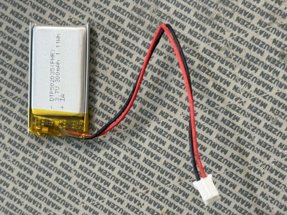
丸型 (ESP32版)
1裏蓋を外す
裏蓋と表枠の継ぎ目に爪を引っ掛けて、徐々に開けて外します。
⚠️ 裏蓋を接続しているピンは弱いため、一気にこじ開けるとピンが折れることがあります。少しずつ開けてください。
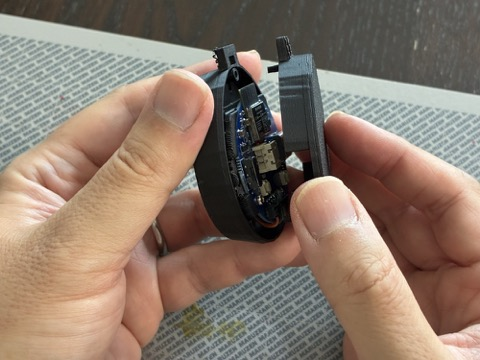
2基板を取り出す
基板の裏側にはバッテリーケースが取り付けられています。バッテリーを入れられるよう、基板ごとケースの表枠から取り外します。
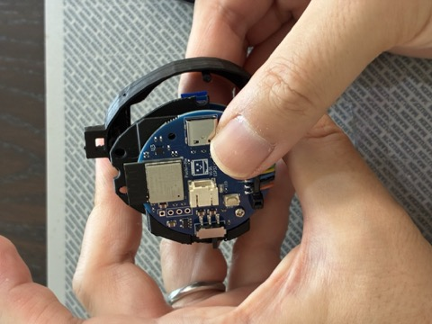
3バッテリーを接続する
バッテリーのコネクタを、基板のコネクタに奥まで差し込みます。
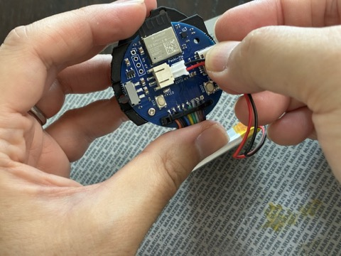
4バッテリーを収納する
基板裏のバッテリーケースに、バッテリーを横からスライドさせて入れます。
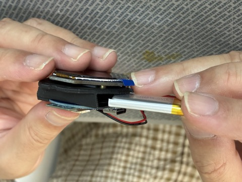
5基板をケースに戻す
ケースの表枠にあるピンに基板を合わせるようにして収めます。リード線を挟み込まないように注意してください。
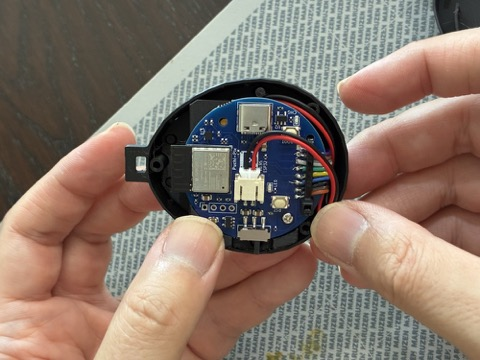
6裏蓋を閉じる
裏蓋のピンを合わせて閉じます。
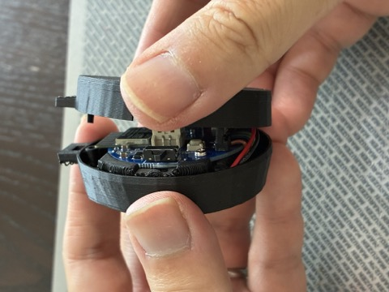
7動作確認
側面のスイッチをONにして、画面が表示されれば完了です。
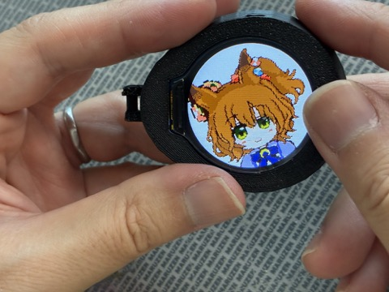
角型 (STM32版)
1裏蓋を外す
裏蓋の継ぎ目に爪をかけ、外します。
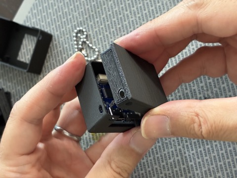
2基板を取り出す
基板をケースから取り出します。
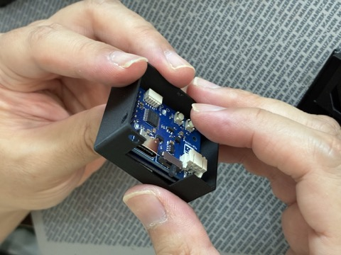
3表枠とディスプレイを外す
表枠とディスプレイモジュールを分離します。
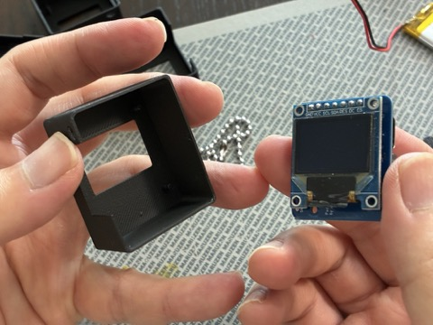
4バッテリーを接続する
バッテリーのコネクタを、基板のコネクタに奥まで差し込みます。
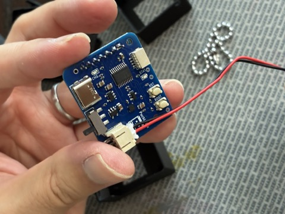
5バッテリーを電池ケージに収める
裏蓋の電池ケージにバッテリーを納め、リード線は押さえピンに引っ掛けます。
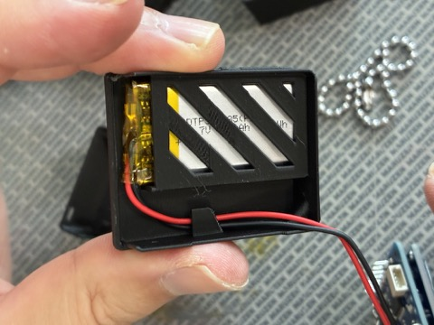
6基板をケースに戻す
USB-C・スイッチが側面の窓に合う向きで収めます。
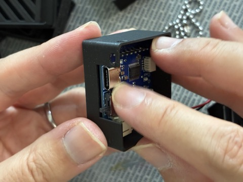
7ディスプレイと表枠を戻す
ディスプレイモジュールを表枠にはめ、ケースの前面に取り付けます。
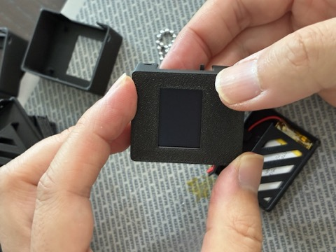
8裏蓋を閉じる
裏蓋を閉じます。裏蓋は、写真のようにボールチェーン穴がない側面を先にはめてから、押し込むとやりやすいです。
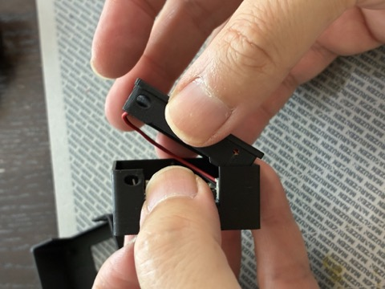
9動作確認
側面のスイッチをONにして、画面が表示されれば完了です。
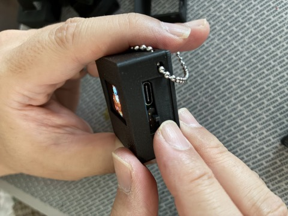